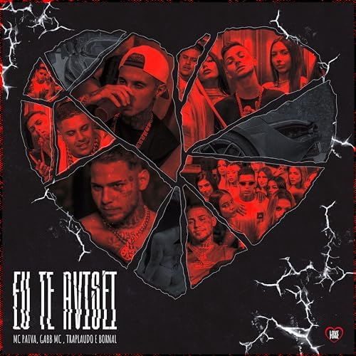
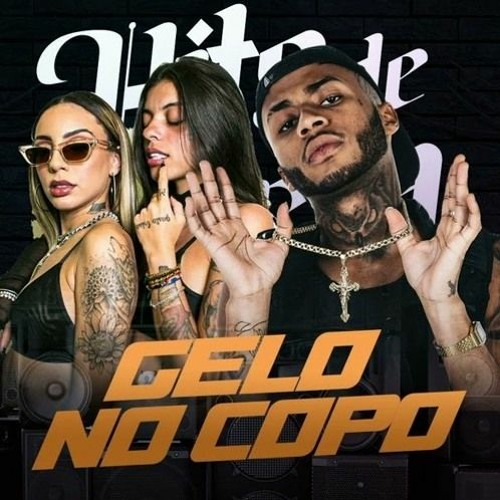
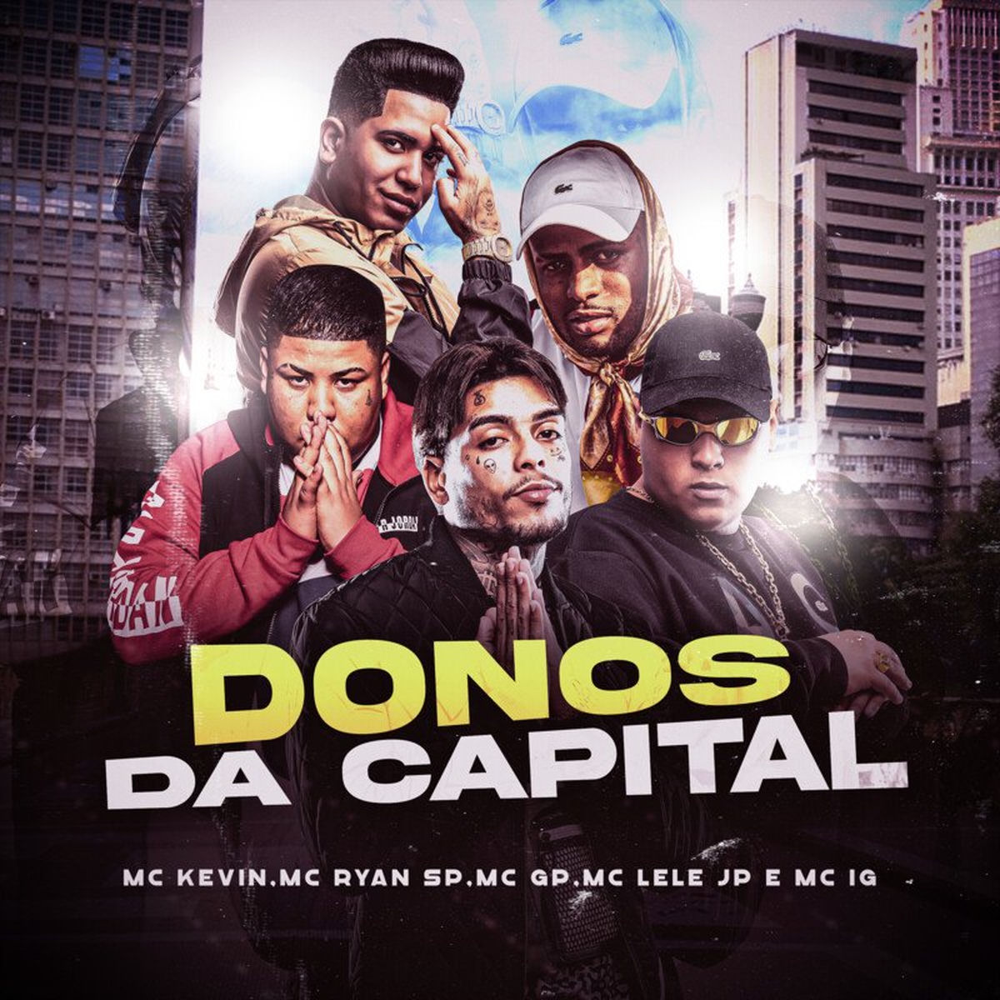

<!DOCTYPE html>
<html lang="en">

<head>
    <meta charset="UTF-8">
    <meta name="viewport" content="width=device-width, initial-scale=1.0">
    <title>musicas da isa</title>
    <link rel="stylesheet" href="https://cdnjs.cloudflare.com/ajax/libs/font-awesome/7.0.1/css/all.min.css"
        integrity="sha512-2SwdPD6INVrV/lHTZbO2nodKhrnDdJK9/kg2XD1r9uGqPo1cUbujc+IYdlYdEErWNu69gVcYgdxlmVmzTWnetw=="
        crossorigin="anonymous" referrerpolicy="no-referrer" />
    <link rel="stylesheet" href="style.css">
</head>

<body>
    <aside class="sidebar">
        <div class="sidebar-header">
            <div class="logo">
                <i class="fa-brands fa-spotify"></i>
                <h1>musicas da isa</h1>
            </div>

            <nav class="menu">
                <ul>
                    <li><a href="#"> <i class="fa-solid fa-house"></i>Inicio</a></li>
                    <li><a href="#"> <i class="fa-solid fa-magnifying-glass"></i>Pesquisar</a></li>
                    <li><a href="#"> <i class="fa-solid fa-book"></i>Biblioteca</a></li>
                    <li><a href="#"> <i class="fa-solid fa-gears"></i> Ajustes</a></li>

                </ul>
            </nav>

            <nav class="menu">
                <div>

                    <ul>
                        <li><a href="#"><i class="fa-solid fa-plus"></i>Criar Playlist</a></li>
                        <li><a href="#"><i class="fa-solid fa-heart"></i>Músicas curtidas</a></li>
                    </ul>
            </nav>
        </div>

        <div class="sidebar-footer">
            <div class="links">
                <a href="">Legal</a>
                <a href="">Privacidade</a>
                <a href="">Politica de Privacidade</a>
                <a href="">Cookies</a>
                <a href="">Sobre Nós</a>
            </div>
            <button><i class="fa-solid fa-globe"></i>Portugues</button>
        </div>

    </aside>

    <main>
        <section>
            <div class="card">
                
                <h2>SEMI NUA 2</h2>
                <p> “Semi Nua 2” é a exaltação da liberdade, do prazer e da autonomia feminina, diretamente conectados
                    ao estilo de vida da ostentação. Em vez de ser apenas uma música sobre desejo, a faixa usa o luxo
                    (marcas de grife, carros e festas) como um cenário para celebrar uma mulher que é dona de si mesma,
                    independente e livre para viver sua sexualidade.</p>

            </div>
            <div class="card">
                
                <h2>EU TE AVISEI</h2>
                <p>"Eu Te Avisei" é a superação de um relacionamento tóxico através do amadurecimento e da reconquista
                    da liberdade pessoal. A música foca no desgaste provocado por ciúmes infundados e pela interferência
                    negativa de terceiros. O ponto central da narrativa é a virada de chave do protagonista: em vez de
                    se prender ao sofrimento ou revidar as brigas, ele escolhe seguir em frente, usando a ostentação e o
                    sucesso como ferramentas de empoderamento.No fim, a faixa deixa a mensagem de que proteger a própria
                    paz e aprender com os erros é mais valioso do que insistir em relações movidas pela desconfiança.
                </p>

            </div>
            <div class="card">
                
                <h2>Cê Tá Bem?</h2>
                <p>"Cê Tá Bem?" é um desabafo nostálgico sobre a saudade e a dificuldade de superar o término. O artista
                    liga para a ex-parceira misturando preocupação real com o desejo de reviver a antiga intimidade,
                    mesmo ciente de que o tempo e a rotina já os afastaram.</p>

            </div>
            <div class="card">
                
                <h2>Gelo no Copo</h2>
                <p>Gelo no Copo (Hyperanhas)
                    Esta música é um hino de empoderamento, ostentação e liberdade feminina dentro da cena do trap. O
                    significado central gira em torno da independência financeira e emocional das artistas, que usam a
                    curtição, as bebidas caras e as joias como símbolos de vitória em um meio predominantemente
                    masculino, deixando claro que elas comandam a própria vida, não dependem de ninguém e estão focadas
                    apenas em faturar e se divertir.</p>

            </div>
            <div class="card">
                
                <h2>SENTIMENTO</h2>
                <p>"Sentimento" é que o amor autêntico e verdadeiro é capaz de superar qualquer barreira social, de
                    origem ou de estilo de vida. Usando a clássica metáfora de "a dama e o vagabundo", a música mostra
                    que a conexão real e a simplicidade do cotidiano são muito mais fortes do que as aparências ou os
                    julgamentos externos. Mesmo diante da dor da separação e das diferenças gritantes de realidade, o
                    foco central é a esperança e a insistência no amor, provando que o sentimento genuíno resiste e
                    prevalece sobre as convenções sociais.</p>

            </div>
        </section>
        <section>
            <div class="card">
                
                <h2>CARTEL DO 900</h2>
                <p> "Cartel do 900" é a utilização do poder, da lealdade e do sucesso financeiro como ferramentas de união e ascensão social para a periferia. Usando o crime organizado e figuras como Pablo Escobar como metáforas, a música não exalta a criminalidade em si, mas sim o status, a proteção mútua ("um pelo outro") e o progresso coletivo que o sucesso traz. A faixa mostra que a ostentação de luxo e a autoconfiança na sexualidade são formas de os jovens da favela conquistarem o respeito, o poder e o reconhecimento que a sociedade muitas vezes lhes nega.</p>

            </div>
            <div class="card">
                
                <h2>DONOS DA CAPITAL</h2>
                <p>“Donos da Capital” é a celebração do sucesso e do luxo como troféus de superação e resistência para o jovem da periferia. Mais do que ostentar bens materiais, a música representa a conquista de espaços sociais historicamente negados aos moradores das quebradas. Através do orgulho de suas origens, da fé e da união coletiva entre os artistas, o funk é transformado em uma ferramenta de poder, onde dominar a capital significa vencer as dificuldades, mudar de vida e ditar as regras da própria história.</p>

            </div>
            <div class="card">
                
                <h2>NOSSO LUGAR</h2>
                <p>“Nosso Lugar” é a busca por cura emocional e estabilidade através de um amor verdadeiro e maduro. A música contrasta o peso das feridas do passado com o desejo de construir um relacionamento sólido e duradouro, que vai além de prazeres passageiros.Ao orgulhar-se de sua origem periférica e usar a metáfora de "a dama e o vagabundo", a faixa mostra que o amor autêntico e a simplicidade do afeto cotidiano funcionam como um refúgio seguro, transformando a parceria afetiva em uma força para superar traumas e alcançar a paz.</p>

            </div>
            <div class="card">
                
                <h2>XTRANHO</h2>
                <p>“XTRANHO” é a reafirmação da liberdade artística através do choque estético e do retorno ao trap underground. Em vez de repetir fórmulas comerciais de sucesso, Matuê usa o álbum como um manifesto de contracultura: adota uma sonoridade mais sombria, esquisita e minimalista para desafiar a mesmice da indústria. O projeto resgata a essência autêntica e "suja" do gênero, utilizando o topo das paradas para dar visibilidade à cena independente e provando que a verdadeira evolução está em arriscar e desacomodar o público.</p>

            </div>
            <div class="card">
                
                <h2>CADE O NEGAO</h2>
                <p>“Cadê o Negão?” é a transformação da perseguição policial e da vivência como "foragido" em um manifesto de sobrevivência e vitória periférica. Usando de ironia e relatos reais sobre o sistema e as operações policiais, MC Negão Original usa o álbum para criticar a opressão, celebrar a liberdade e provar que o sucesso e a música são suas maiores ferramentas de resistência contra a adversidade.</p>

            </div>
        </section>
    </main>
    <footer>
        <div class="textos-footer">
            <h6>Esperimente o Musicas da isa</h6>
            <p>Cadastre-se e curta suas musicas de forma ilimitada.</p>
        </div>
        <button>Cadastre-se Gratis</button>
    </footer>

</body>

</html>